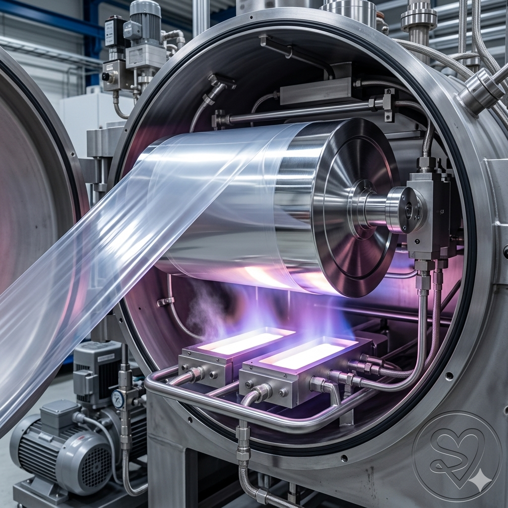

As the flexible packaging sector pivots aggressively toward sustainable, mono-material, recyclable solutions under extended producer responsibility guidelines, Aluminium Oxide (AlOx) transparent barrier coatings have transformed from a premium niche to an operational necessity. Unlike traditional opaque metallised films, AlOx provides exceptional oxygen and moisture barrier performance while remaining transparent, allowing product visibility and seamless recycling in polyolefin streams.
For operations teams and plant heads running conventional vacuum metallisers, the critical strategic crossroad is clear: Do we retrofit an existing machine with an AlOx sublimation package, or do we capital-invest in a dedicated AlOx metallisation line? This deep-dive outlines the critical process physics, operational vulnerabilities, and floor-level engineering parameters required to make the right operational call.

Conventional metallisation relies on simple thermal evaporation of aluminium wire over intermetallic boats under a deep vacuum ($\sim 10^{-4}\text{ mbar}$). AlOx deposition, however, requires precise, stoichiometric introduction of gaseous oxygen ($O_2$) directly into the vapor zone. The gaseous oxygen reacts with the evaporated aluminium vapor clouds to form a transparent layer of $Al_xO_y$ on the moving polymer substrate web.
Retrofitting an existing conventional metalliser with an oxygen gas injection manifold and a plasma treatment loop introduces severe engineering trade-offs:
Evaluating an investment or operational change requires deep structural benchmarks. The matrix below contrasts the operational realities of a field-modified retrofit machine against a purpose-built, dedicated AlOx production system:
| Technical Parameter | Retrofit Conventional Metalliser | Dedicated AlOx Production Line | |
|---|---|---|---|
| Operating Line Speed | 250 – 400 m/min (limited by gas load vacuum recovery) | 600 – 800 m/min (high-capacity roots & diffusion pumps) | |
| Barrier Consistency (WVTR) | Highly variable: 1.5 to 3.0 $\text{g/m}^2/\text{day}$ on BOPP | Stable, repeatable: less than 0.5 $\text{g/m}^2/\text{day}$ | |
| Changeover / Cleaning Time | 24 to 36 hours (deep mechanical scrape-down of dark Al dust) | Regular 2 to 4-hour turnaround maintenance | |
| In-line Inspection Systems | Basic retrofitted single-point optical density monitors | Full-width, high-speed spectrophotometers and defect maps | |
| Process Control Feedbacks | Manual or slow-loop gas injection balancing | Closed-loop, plasma-emission monitor (PEM) sub-millisecond control |
A critical engineering reality that many plants overlook during capability expansion is that raw AlOx coatings have zero scratch resistance and decay rapidly when exposed to atmospheric humidity. To lock in barrier performance (maintaining low Water Vapor Transmission Rates), the film must be coated with a protective topcoat layer (typically an inline or offline PVOH/acrylic lacquer) almost immediately.
This introduces the "Golden Hour Rule" on the shop floor: Freshly produced AlOx rolls must be transferred to a slitter or secondary coating line within a strictly monitored timeframe (ideally less than 24 hours). If your plant layout cannot guarantee immediate secondary processing or climate-controlled dry storage for fresh master reels, investing in a high-speed dedicated metalliser will simply build an inventory bottleneck of rapidly degrading film.
जैसे-जैसे फ्लेक्सिबल पैकेजिंग इंडस्ट्री सस्टेनेबिलिटी (sustainability) और रीसाइक्लिंग नियमों के कड़े होने के कारण मोनो-मटेरियल सॉल्यूशंस की तरफ बढ़ रही है, एल्युमिनियम ऑक्साइड (AlOx) ट्रांसपेरेंट बैरियर कोटिंग्स की मांग तेजी से बढ़ी है। साधारण अपारदर्शी (opaque) मेटलाइज्ड फिल्मों के विपरीत, AlOx असाधारण ऑक्सीजन और मॉइस्चर बैरियर परफॉर्मेंस देता है और साथ ही फिल्म को पूरी तरह से पारदर्शी बनाए रखता है, जिससे पैकेज के अंदर का प्रोडक्ट साफ दिखाई देता है।
वैक्यूम मेटलाइज़र चलाने वाली ऑपरेशन्स टीमों और प्लांट हेड्स के सामने सबसे बड़ा रणनीतिक सवाल यह होता है: क्या हम अपनी मौजूदा पारंपरिक मशीन में ही AlOx मॉडिफिकेशन (Retrofit) करें, या एक नई डेडिकेटेड AlOx मेटलाइजेशन लाइन में निवेश करें? यह ब्लॉग इसी प्रोसेस इंजीनियरिंग और फ्लोर-लेवल पैरामीटर्स का विश्लेषण करता है।
पारंपरिक मेटलाइजेशन गहरे वैक्यूम ($\sim 10^{-4}\text{ mbar}$) के तहत इंटरमेटालिक बोट्स पर एल्युमिनियम वायर को पिघलाकर किया जाता है। इसके विपरीत, AlOx डिपोजिशन के लिए इवेपोरेशन ज़ोन में गैसियस ऑक्सीजन ($O_2$) की सटीक मात्रा को इंजेक्ट करना पड़ता है। यह ऑक्सीजन, एल्युमिनियम वेपर क्लाउड के साथ रियेक्ट करके मूविंग सबस्ट्रेट वेब पर $Al_xO_y$ की एक बेहद पतली, पारदर्शी परत बनाती है।
एक साधारण मेटलाइज़र में ऑक्सीजन गैस मैनिफोल्ड और प्लाज्मा ट्रीटमेंट लूप जोड़कर रेट्रोफिट करने से निम्नलिखित गंभीर तकनीकी समस्याएं आती हैं:
नीचे दी गई तालिका एक फील्ड-मॉडिफाइड रेट्रोफिट मशीन और एक विशेष रूप से निर्मित डेडिकेटेड AlOx मशीन के बीच के अंतर को स्पष्ट करती है:
| तकनीकी पैरामीटर (Technical Parameter) | रेट्रोफिट मेटलाइज़र (Retrofit Machine) | डेडिकेटेड AlOx लाइन (Dedicated Line) |
|---|---|---|
| ऑपरेटिंग लाइन स्पीड | 250 – 400 मीटर/मिनट (गैस लोड के कारण सीमित) | 600 – 800 मीटर/मिनट (हाई-कैपेसिटी पंप्स के साथ) |
| बैरियर कंसिस्टेंसी (WVTR) | अस्थिर: BOPP पर 1.5 से 3.0 $\text{g/m}^2/\text{day}$ | स्थिर और सटीक: 0.5 $\text{g/m}^2/\text{day}$ से कम |
| क्लीनिंग और चेंजओवर टाइम | 24 से 36 घंटे (काली एल्युमिनियम डस्ट की गहरी सफाई) | सामान्य 2 से 4 घंटे का रूटीन मेंटेनेंस |
| इन-लाइन इंस्पेक्शन सिस्टम | बेसिक सिंगल-पॉइंट ऑप्टिकल डेंसिटी मॉनिटर्स | फुल-विड्थ हाई-स्पीड स्पेक्ट्रोफोटोमीटर और डिफेक्ट मैपिंग |
AlOx कोटिंग्स में स्क्रैच रेजिस्टेंस बिल्कुल नहीं होता और हवा की नमी (humidity) के संपर्क में आने पर ये बहुत तेजी से खराब होने लगती हैं। इनके बैरियर गुणों को लॉक रखने के लिए, फिल्म के ऊपर तुरंत एक सुरक्षात्मक टॉपकोट परत (जैसे कि PVOH या एक्रेलिक लैकर) चढ़ाना अनिवार्य है।
यहीं से शॉप फ्लोर पर "गोल्डन ऑवर रूल" लागू होता है: ताजा निर्मित AlOx रोल्स को 24 घंटे के भीतर सेकेंडरी कोटिंग लाइन या स्लीटर पर प्रोसेस कर लिया जाना चाहिए। यदि आपका प्लांट लेआउट या क्लाइमेट-कंट्रोल स्टोरेज इस गति की अनुमति नहीं देता है, तो डेडिकेटेड मशीन में किया गया बड़ा निवेश भी इन्वेंट्री ब्लॉक और क्वालिटी रिजेक्शन का कारण बन जाएगा।